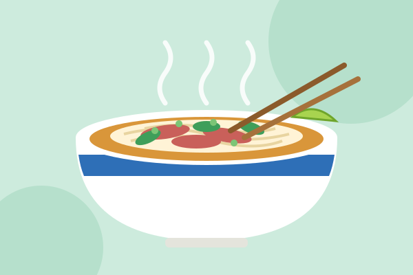
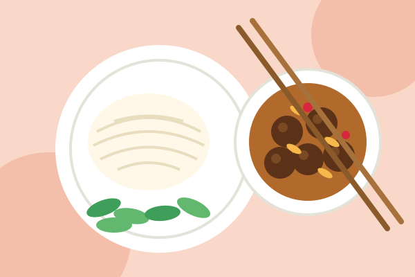
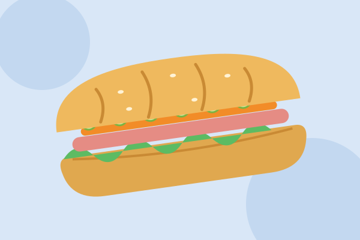
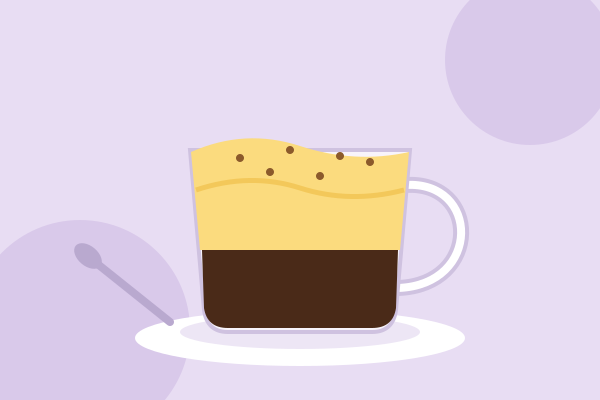
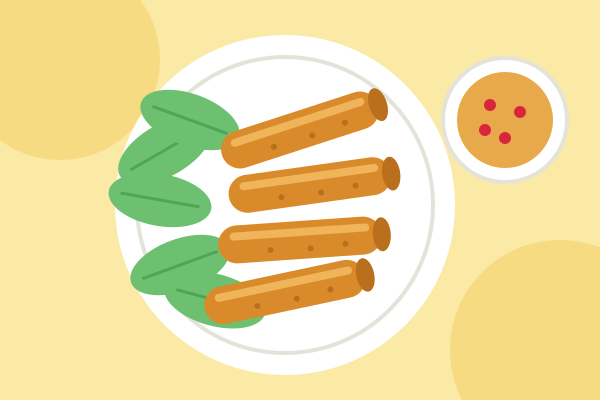
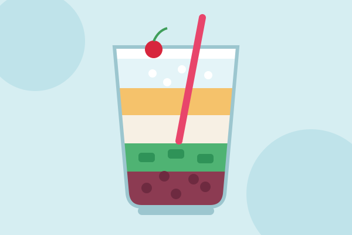

Phở
Clear, fragrant broth with soft rice noodles. The classic way to start a morning.

Bún chả
Smoky grilled pork in a sweet and sour broth with noodles and fresh herbs.

Bánh mì
A crisp baguette packed with pâté, pickled vegetables, herbs and meat.

Cà phê trứng
Strong coffee under a cloud of sweet, whipped egg cream. Half drink, half dessert.

Nem rán
Golden fried spring rolls, best eaten hot with lettuce and a tangy dip.

Chè
A colorful sweet dessert in a glass, layered with beans, jelly and ice.